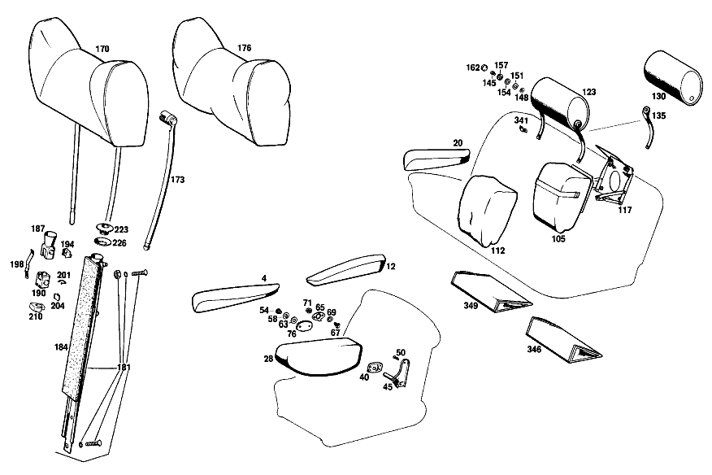

| № | Артикул | Название | Кол. | Примечание | Ограничение |
|---|---|---|---|---|---|
| 4 | A 100 970 02 01 | ПОДЛОКОТНИК | 1 | RIGHT DRALON\-VELOURS COMBINED с LEATHER [406] ПРИ ЗАКАЗЕ УКАЗЫВАТЬ НОМЕР ЦВЕТА [002] UP TO CHASSIS 000551 | |
| 20 | A 100 970 04 01 | ПОДЛОКОТНИК | 1 | RIGHT, DRALON\-VELOURS COMBINED с LEATHER [406] ПРИ ЗАКАЗЕ УКАЗЫВАТЬ НОМЕР ЦВЕТА [002] UP TO CHASSIS 000551 | |
| 28 | A 100 970 25 30 | ПОДЛОКОТНИК ОТКИДН. | 1 | LEFT; DRALON\-VELOURS [406] ПРИ ЗАКАЗЕ УКАЗЫВАТЬ НОМЕР ЦВЕТА [012] UP TO CHASSIS 000685 | |
| 40 | A 112 973 01 11 | ПЛАСТИНА | 2 | [012] UP TO CHASSIS 000685 | |
| 45 | A 100 970 13 20 | ПОДШИПНИК | 1 | СЛЕВА [013] FROM CHASSIS 000686 | |
| 50 | N 000966 006042 | Винт | 4 | ||
| 54 | A 112 973 00 71 | БОЛТ | 2 | [012] UP TO CHASSIS 000685 | |
| 58 | A 112 994 00 12 | ПРЕДОХРАНИТЕЛЬ | 2 | [012] UP TO CHASSIS 000685 | |
| 63 | A 100 990 15 40 | ШАЙБА | 2 | [012] UP TO CHASSIS 000685 | |
| 65 | A 109 973 00 26 | УПОР | 2 | [019] FROM CHASSIS 000686-001711 | |
| 67 | N 007988 006157 | БОЛТ | 4 | [020] FROM CHASSIS 000366-001711 | |
| 69 | A 108 973 00 29 | НАПРАВЛЯЮЩАЯ | 4 | [019] FROM CHASSIS 000686-001711 | |
| 71 | A 109 990 00 50 | ГАЙКА | 2 | [014] FROM CHASSIS 000686-000939 | |
| 76 | A 100 973 13 11 | ПЛАСТИНА | - | ||
| 76 | A 100 973 09 11 | ПЛАСТИНА | 2 | [023] UP TO CHASSIS 001711 | |
| 105 | A 100 970 12 30 | ПОДЛОКОТНИК ОТКИДН. | 1 | DRALON\-VELOURS [406] ПРИ ЗАКАЗЕ УКАЗЫВАТЬ НОМЕР ЦВЕТА [025] FROM CHASSIS 000007 [026] GREY: UP TO CHASSIS 000672; BLUE: UP TO CHASSIS 000598; BEIGE: UP TO CHASSIS 000567; GREY-BEIGE: UP TO CHASSIS 000610; 012, GREEN-BEIGE: UP TO CHASSIS 000969 | |
| 112 | A 100 970 12 47 | - ОБИВКА | 1 | DRALON\-VELOURS [406] ПРИ ЗАКАЗЕ УКАЗЫВАТЬ НОМЕР ЦВЕТА [025] FROM CHASSIS 000007 [026] GREY: UP TO CHASSIS 000672; BLUE: UP TO CHASSIS 000598; BEIGE: UP TO CHASSIS 000567; GREY-BEIGE: UP TO CHASSIS 000610; 012, GREEN-BEIGE: UP TO CHASSIS 000969 | |
| 117 | A 100 970 06 20 | - ПОДШИПНИК | 1 | [054] WITH LEATHER TRIM, UP TO CHASSIS 001250; WITH VELOURS TRIM UP TO CHASSIS 001557 EXCEPT FOR 001541 | |
| 123 | A 100 970 00 50 | ПОДГОЛОВНИК | 2 | DRALON\-VELOURS [406] ПРИ ЗАКАЗЕ УКАЗЫВАТЬ НОМЕР ЦВЕТА [026] GREY: UP TO CHASSIS 000672; BLUE: UP TO CHASSIS 000598; BEIGE: UP TO CHASSIS 000567; GREY-BEIGE: UP TO CHASSIS 000610; 012, GREEN-BEIGE: UP TO CHASSIS 000969 | |
| 130 | A 114 970 08 56 | - ОБИВКА | 2 | ВЕЛЮР [417] БОЛЬШЕ НЕ ПОСТАВЛЯЕТСЯ, ЗАКАЗЫВАТЬ КОМПЛЕКТ ПОСТАВКИ [406] ПРИ ЗАКАЗЕ УКАЗЫВАТЬ НОМЕР ЦВЕТА [402] БОЛЬШЕ НЕ ПОСТАВЛЯЕТСЯ [036] FROM CHASSIS 001134 | |
| 135 | A 100 970 01 73 | - СКОБА | 2 | СЛЕВА [030] UP TO CHASSIS 000552 | |
| 145 | A 110 990 05 31 | - БОЛТ | 4 | [035] UP TO CHASSIS 001133 | |
| 148 | A 000 993 01 26 | - ПРУЖИНА ДИСКОВАЯ | 4 | [035] UP TO CHASSIS 001133 | |
| 151 | A 110 975 00 72 | - ШАЙБА | 4 | [035] UP TO CHASSIS 001133 | |
| 154 | A 110 975 01 72 | - ШАЙБА | 8 | [035] UP TO CHASSIS 001133 | |
| 157 | A 110 975 00 99 | - ФИТИНГ | 4 | [035] UP TO CHASSIS 001133 | |
| 162 | A 110 975 00 30 | - КОЛПАЧОК | 4 | [035] UP TO CHASSIS 001133 | |
| 170 | A 114 970 08 50 | ПОДГОЛОВНИК | - | ||
| 170 | A 108 970 55 50 | ПОДГОЛОВНИК | 2 | ВЕЛЮР [406] ПРИ ЗАКАЗЕ УКАЗЫВАТЬ НОМЕР ЦВЕТА [042] FROM CHASSIS 002175 ALSO INSTALLED ON 002169,002172,002173 | |
| 173 | A 115 970 27 73 | - СКОБА | 2 | СЛЕВА [038] FROM CHASSIS 001902 EXCEPT FOR 001928-001940 | |
| 176 | A 108 970 27 56 | - ОБИВКА | 2 | ВЕЛЮР [417] БОЛЬШЕ НЕ ПОСТАВЛЯЕТСЯ, ЗАКАЗЫВАТЬ КОМПЛЕКТ ПОСТАВКИ [402] БОЛЬШЕ НЕ ПОСТАВЛЯЕТСЯ [036] FROM CHASSIS 001134 | |
| 181 | A 115 970 54 50 | КРЕП. МАТЕРИАЛ | 2 | [036] FROM CHASSIS 001134 | |
| 184 | A 107 970 01 15 | - Направляющая | 2 | СЛЕВА [036] FROM CHASSIS 001134 | |
| 187 | A 115 975 00 22 | - НАПРАВЛЯЮЩАЯ | - | СВЕРХУ [402] БОЛЬШЕ НЕ ПОСТАВЛЯЕТСЯ [036] FROM CHASSIS 001134 | |
| 190 | A 115 975 01 22 | - НАПРАВЛЯЮЩАЯ | - | ВНИЗУ [402] БОЛЬШЕ НЕ ПОСТАВЛЯЕТСЯ [036] FROM CHASSIS 001134 | |
| 194 | A 115 975 00 23 | - ЭЛЕМЕНТ ТОРМОЗНОЙ | 4 | [036] FROM CHASSIS 001134 | |
| 198 | A 115 975 01 37 | - ПРУЖИНА | - | ||
| 198 | A 124 975 01 37 | - пружина | 4 | [036] FROM CHASSIS 001134 | |
| 201 | A 115 988 03 78 | - Скоба | 4 | [402] БОЛЬШЕ НЕ ПОСТАВЛЯЕТСЯ [036] FROM CHASSIS 001134 | |
| 204 | A 115 988 04 78 | - Скоба | 8 | [036] FROM CHASSIS 001134 | |
| 210 | A 115 975 00 24 | - Заслонка | 2 | [042] FROM CHASSIS 002175 ALSO INSTALLED ON 002169,002172,002173 | |
| 223 | A 126 988 00 82 | Кольцо | 4 | [036] FROM CHASSIS 001134 | |
| 226 | A 115 988 03 82 | Плоская проушина | - | ||
| 226 | A 126 990 12 40 | Диск | 4 | [036] FROM CHASSIS 001134 | |
| 230 | A 100 910 19 34 | РАМА СПИНКИ | - | СЛЕВА [402] БОЛЬШЕ НЕ ПОСТАВЛЯЕТСЯ [060] FOR USE WITH PARTITION PANEL | |
| 233 | A 100 914 25 16 | НАКЛАДКА | - | В ЦЕНТРЕ СЛЕВА [402] БОЛЬШЕ НЕ ПОСТАВЛЯЕТСЯ [060] FOR USE WITH PARTITION PANEL | |
| 236 | A 100 970 07 15 | ПЛАНКА | 2 | СЛЕВА [042] FROM CHASSIS 002175 ALSO INSTALLED ON 002169,002172,002173 [060] FOR USE WITH PARTITION PANEL | |
| 239 | A 115 975 00 22 | - НАПРАВЛЯЮЩАЯ | - | СВЕРХУ [402] БОЛЬШЕ НЕ ПОСТАВЛЯЕТСЯ [060] FOR USE WITH PARTITION PANEL | |
| 242 | A 115 975 01 22 | - НАПРАВЛЯЮЩАЯ | - | ВНИЗУ [402] БОЛЬШЕ НЕ ПОСТАВЛЯЕТСЯ [401] ИСПОЛЬЗОВАТЬ СТАРЫЙ НОМЕР ДЕТАЛИ [056] UP TO CHASSIS 002174 EXCEPT FOR 002169,002172,002173 [060] FOR USE WITH PARTITION PANEL | |
| 245 | A 115 975 00 23 | - ЭЛЕМЕНТ ТОРМОЗНОЙ | 4 | [060] FOR USE WITH PARTITION PANEL | |
| 251 | A 115 975 02 37 | - ПРУЖИНА | - | ||
| 251 | A 124 975 01 37 | - пружина | 2 | СЛЕВА [042] FROM CHASSIS 002175 ALSO INSTALLED ON 002169,002172,002173 [060] FOR USE WITH PARTITION PANEL | |
| 254 | A 115 988 04 78 | - Скоба | 16 | [060] FOR USE WITH PARTITION PANEL | |
| 256 | A 115 988 03 78 | - Скоба | 4 | [402] БОЛЬШЕ НЕ ПОСТАВЛЯЕТСЯ [401] ИСПОЛЬЗОВАТЬ СТАРЫЙ НОМЕР ДЕТАЛИ [056] UP TO CHASSIS 002174 EXCEPT FOR 002169,002172,002173 [060] FOR USE WITH PARTITION PANEL | |
| 259 | A 115 975 00 24 | - Заслонка | 2 | [060] FOR USE WITH PARTITION PANEL | |
| 262 | A 115 975 03 37 | - Нажимная пружина | 2 | [060] FOR USE WITH PARTITION PANEL | |
| 265 | A 100 975 00 85 | - Управление | 2 | [060] FOR USE WITH PARTITION PANEL | |
| 268 | N 007988 006146 | БОЛТ | 12 | [060] FOR USE WITH PARTITION PANEL | |
| 270 | A 000 990 02 42 | ШАЙБА | 8 | [402] БОЛЬШЕ НЕ ПОСТАВЛЯЕТСЯ [060] FOR USE WITH PARTITION PANEL | |
| 272 | N 009021 006103 | Шайба | - | ||
| 272 | N 009021 006208 | Шайба | 8 | 6 MM [060] FOR USE WITH PARTITION PANEL | |
| 275 | N 000934 006007 | Гайка | 6 | [060] FOR USE WITH PARTITION PANEL | |
| 277 | N 007988 006169 | БОЛТ | 4 | [402] БОЛЬШЕ НЕ ПОСТАВЛЯЕТСЯ [060] FOR USE WITH PARTITION PANEL | |
| 279 | A 115 991 14 40 | РАСПОРН. ТРУБКА | 4 | [060] FOR USE WITH PARTITION PANEL | |
| 301 | N 006797 006145 | Зубчатая шайба | 2 | [060] FOR USE WITH PARTITION PANEL | |
| 307 | A 115 975 01 22 | НАПРАВЛЯЮЩАЯ | - | [402] БОЛЬШЕ НЕ ПОСТАВЛЯЕТСЯ [041] FROM CHASSIS 001251-002174 EXCEPT FOR 002169,002172,002173 | |
| 310 | A 115 975 00 23 | ЭЛЕМЕНТ ТОРМОЗНОЙ | 4 | ||
| 314 | A 115 975 01 37 | ПРУЖИНА | - | ||
| 314 | A 124 975 01 37 | пружина | 4 | [041] FROM CHASSIS 001251-002174 EXCEPT FOR 002169,002172,002173 | |
| 317 | A 115 988 03 78 | Скоба | 4 | [402] БОЛЬШЕ НЕ ПОСТАВЛЯЕТСЯ [041] FROM CHASSIS 001251-002174 EXCEPT FOR 002169,002172,002173 | |
| 319 | A 115 988 04 78 | Скоба | 16 | [034] FROM CHASSIS 001251 | |
| 323 | A 100 970 04 15 | ПЛАНКА | 2 | [042] FROM CHASSIS 002175 ALSO INSTALLED ON 002169,002172,002173 | |
| 326 | A 100 975 00 85 | Управление | 2 | [042] FROM CHASSIS 002175 ALSO INSTALLED ON 002169,002172,002173 | |
| 329 | A 115 975 00 24 | Заслонка | - | [042] FROM CHASSIS 002175 ALSO INSTALLED ON 002169,002172,002173 | |
| 332 | A 115 975 03 37 | Нажимная пружина | 2 | [042] FROM CHASSIS 002175 ALSO INSTALLED ON 002169,002172,002173 | |
| 335 | N 006797 005110 | Зубчатая шайба | 2 | RAIL TO BACKREST FRAME, TOP [042] FROM CHASSIS 002175 ALSO INSTALLED ON 002169,002172,002173 | |
| 338 | N 000934 005008 | Гайка | 2 | RAIL TO BACKREST FRAME, TOP; M5 [042] FROM CHASSIS 002175 ALSO INSTALLED ON 002169,002172,002173 | |
| 341 | A 100 975 00 40 | СЕРЬГА | 4 | [035] UP TO CHASSIS 001133 | |
| 346 | A 100 970 03 60 | УПОР ДЛЯ НОГ | 2 | VELOURS CARPET [406] ПРИ ЗАКАЗЕ УКАЗЫВАТЬ НОМЕР ЦВЕТА | |
| 352 | A 100 860 18 85 | РЕМЕНЬ БЕЗОПАСНОСТИ | 2 | СИДЕНЬЕ ВОДИТЕЛЯ [053] FROM CHASSIS 002044 ALSO INSTALLED ON 002007 | |
| 355 | A 000 868 07 69 | - ЗАМКОВЫЙ БЛОК | 2 | [053] FROM CHASSIS 002044 ALSO INSTALLED ON 002007 | |
| 358 | A 100 868 00 22 | - Направляющая ремня | 2 | [402] БОЛЬШЕ НЕ ПОСТАВЛЯЕТСЯ [053] FROM CHASSIS 002044 ALSO INSTALLED ON 002007 | |
| 360 | A 000 992 14 05 | - Шайба с буртиком | 8 | [053] FROM CHASSIS 002044 ALSO INSTALLED ON 002007 | |
| 363 | A 000 868 07 30 | - КОЛПАЧОК | 2 | [402] БОЛЬШЕ НЕ ПОСТАВЛЯЕТСЯ [053] FROM CHASSIS 002044 ALSO INSTALLED ON 002007 | |
| 367 | A 000 868 08 30 | - КОЛПАЧОК | 2 | [053] FROM CHASSIS 002044 ALSO INSTALLED ON 002007 | |
| 373 | A 100 860 19 85 | РЕМЕНЬ БЕЗОПАСНОСТИ | 2 | REAR SEAT BENCH, OUTSIDE [053] FROM CHASSIS 002044 ALSO INSTALLED ON 002007 | |
| 375 | A 000 868 11 69 | - ЗАМКОВЫЙ БЛОК | 2 | [053] FROM CHASSIS 002044 ALSO INSTALLED ON 002007 | |
| 378 | A 003 990 37 01 | - болт | 2 | 7/16"UNF\-2AX25 [053] FROM CHASSIS 002044 ALSO INSTALLED ON 002007 | |
| 381 | A 000 987 14 45 | - Колпачок | 2 | [053] FROM CHASSIS 002044 ALSO INSTALLED ON 002007 | |
| 384 | A 100 860 22 85 | РЕМЕНЬ БЕЗОПАСНОСТИ | 1 | ЗАДН. СИД. В ЦЕНТРЕ [053] FROM CHASSIS 002044 ALSO INSTALLED ON 002007 | |
| 387 | A 000 868 11 69 | - ЗАМКОВЫЙ БЛОК | 1 | [053] FROM CHASSIS 002044 ALSO INSTALLED ON 002007 | |
| 390 | A 003 990 37 01 | - болт | 1 | 7/16"UNF\-2AX25 [053] FROM CHASSIS 002044 ALSO INSTALLED ON 002007 | |
| 459 | A 115 868 00 88 | ТАБЛИЧКА | 1 | [053] FROM CHASSIS 002044 ALSO INSTALLED ON 002007 | |
| A 100 970 01 01 | ПОДЛОКОТНИК | 1 | LEFT DRALON\-VELOURS COMBINED с LEATHER [406] ПРИ ЗАКАЗЕ УКАЗЫВАТЬ НОМЕР ЦВЕТА [002] UP TO CHASSIS 000551 | ||
| A 100 970 25 01 | ПОДЛОКОТНИК | 1 | LEFT WOOL\-VELOURS COMBINED с LEATHER [406] ПРИ ЗАКАЗЕ УКАЗЫВАТЬ НОМЕР ЦВЕТА [003] FROM CHASSIS 000552-000885; EXCEPT FOR 000875,000877,000882-000884 | ||
| A 100 970 21 01 | ПОДЛОКОТНИК | 1 | LEFT LEATHER TRIM [406] ПРИ ЗАКАЗЕ УКАЗЫВАТЬ НОМЕР ЦВЕТА [007] UP TO CHASSIS 000885 EXCEPT FOR 000875,000877,000882-000884 | ||
| A 100 970 35 01 | ПОДЛОКОТНИК | 1 | LEFT WOOL\-VELOURS COMBINED с LEATHER [406] ПРИ ЗАКАЗЕ УКАЗЫВАТЬ НОМЕР ЦВЕТА [004] FROM CHASSIS 000886-001028 ALSO INSTALLED ON 000875,000877,000882-000884 EXCEPT FOR 000996,001021,001024,001026 | ||
| A 100 970 37 01 | ПОДЛОКОТНИК | 1 | LEFT LEATHER TRIM [406] ПРИ ЗАКАЗЕ УКАЗЫВАТЬ НОМЕР ЦВЕТА [004] FROM CHASSIS 000886-001028 ALSO INSTALLED ON 000875,000877,000882-000884 EXCEPT FOR 000996,001021,001024,001026 | ||
| A 100 970 43 01 | ПОДЛОКОТНИК | 1 | LEFT WOOL\-VELOURS COMBINED с LEATHER [406] ПРИ ЗАКАЗЕ УКАЗЫВАТЬ НОМЕР ЦВЕТА [005] FROM CHASSIS 001029 ALSO INSTALLED ON 000996,001021,001024,001026 | ||
| A 100 970 45 01 | ПОДЛОКОТНИК | 1 | LEFT LEATHER TRIM [406] ПРИ ЗАКАЗЕ УКАЗЫВАТЬ НОМЕР ЦВЕТА [005] FROM CHASSIS 001029 ALSO INSTALLED ON 000996,001021,001024,001026 | ||
| A 100 970 26 01 | ПОДЛОКОТНИК | 1 | RIGHT WOOL\-VELOURS COMBINED с LEATHER [406] ПРИ ЗАКАЗЕ УКАЗЫВАТЬ НОМЕР ЦВЕТА [006] FROM CHASSIS 000552-001028; EXCEPT FOR 000996,001021,001024,001026 | ||
| A 100 970 22 01 | ПОДЛОКОТНИК | 1 | RIGHT LEATHER TRIM [406] ПРИ ЗАКАЗЕ УКАЗЫВАТЬ НОМЕР ЦВЕТА [008] UP TO CHASSIS 001028; EXCEPT FOR 000996,001021,001024,001026 | ||
| A 100 970 40 01 | ПОДЛОКОТНИК | 1 | RIGHT WOOL\-VELOURS COMBINED с LEATHER [406] ПРИ ЗАКАЗЕ УКАЗЫВАТЬ НОМЕР ЦВЕТА [005] FROM CHASSIS 001029 ALSO INSTALLED ON 000996,001021,001024,001026 | ||
| A 100 970 42 01 | ПОДЛОКОТНИК | 1 | RIGHT LEATHER TRIM [406] ПРИ ЗАКАЗЕ УКАЗЫВАТЬ НОМЕР ЦВЕТА [005] FROM CHASSIS 001029 ALSO INSTALLED ON 000996,001021,001024,001026 | ||
| N 007976 004207 | Винт | 4 | [009] FROM CHASSIS 000886 | ||
| N 009021 005202 | Шайба | - | |||
| N 009021 005205 | Шайба | 4 | для ARMREST MOUNTING PART, SEE GROUP 72 [009] FROM CHASSIS 000886 | ||
| A 100 970 03 01 | ПОДЛОКОТНИК | 1 | LEFT, DRALON\-VELOURS COMBINED с LEATHER [406] ПРИ ЗАКАЗЕ УКАЗЫВАТЬ НОМЕР ЦВЕТА [002] UP TO CHASSIS 000551 | ||
| A 100 970 27 01 | ПОДЛОКОТНИК | 1 | LEFT WOOL\-VELOURS COMBINED с LEATHER [406] ПРИ ЗАКАЗЕ УКАЗЫВАТЬ НОМЕР ЦВЕТА [010] FROM CHASSIS 000552-001028 EXCEPT FOR 000996,001021,001024,001026 | ||
| A 100 970 19 01 | ПОДЛОКОТНИК | 1 | LEFT LEATHER TRIM [406] ПРИ ЗАКАЗЕ УКАЗЫВАТЬ НОМЕР ЦВЕТА [008] UP TO CHASSIS 001028; EXCEPT FOR 000996,001021,001024,001026 | ||
| A 100 970 47 01 | ПОДЛОКОТНИК | 1 | LEFT WOOL\-VELOURS COMBINED с LEATHER [406] ПРИ ЗАКАЗЕ УКАЗЫВАТЬ НОМЕР ЦВЕТА [005] FROM CHASSIS 001029 ALSO INSTALLED ON 000996,001021,001024,001026 | ||
| A 100 970 49 01 | ПОДЛОКОТНИК | 1 | LEFT LEATHER TRIM [406] ПРИ ЗАКАЗЕ УКАЗЫВАТЬ НОМЕР ЦВЕТА [005] FROM CHASSIS 001029 ALSO INSTALLED ON 000996,001021,001024,001026 | ||
| A 100 970 28 01 | ПОДЛОКОТНИК | 1 | RIGHT WOOL\-VELOURS COMBINED с LEATHER [406] ПРИ ЗАКАЗЕ УКАЗЫВАТЬ НОМЕР ЦВЕТА [010] FROM CHASSIS 000552-001028 EXCEPT FOR 000996,001021,001024,001026 | ||
| A 100 970 20 01 | ПОДЛОКОТНИК | 1 | RIGHT LEATHER TRIM [406] ПРИ ЗАКАЗЕ УКАЗЫВАТЬ НОМЕР ЦВЕТА [008] UP TO CHASSIS 001028; EXCEPT FOR 000996,001021,001024,001026 | ||
| A 100 970 48 01 | ПОДЛОКОТНИК | 1 | RIGHT WOOL\-VELOURS COMBINED с LEATHER [406] ПРИ ЗАКАЗЕ УКАЗЫВАТЬ НОМЕР ЦВЕТА [005] FROM CHASSIS 001029 ALSO INSTALLED ON 000996,001021,001024,001026 | ||
| A 100 970 50 01 | ПОДЛОКОТНИК | 1 | RIGHT LEATHER TRIM для ARMREST MOUNTING PART, SEE GROUP 73 [406] ПРИ ЗАКАЗЕ УКАЗЫВАТЬ НОМЕР ЦВЕТА [005] FROM CHASSIS 001029 ALSO INSTALLED ON 000996,001021,001024,001026 | ||
| A 100 970 00 30 | ПОДЛОКОТНИК ОТКИДН. | - | |||
| A 100 970 00 30 | ПОДЛОКОТНИК ОТКИДН. | - | |||
| A 100 970 26 30 | ПОДЛОКОТНИК ОТКИДН. | 1 | RIGHT; DRALON\-VELOURS [406] ПРИ ЗАКАЗЕ УКАЗЫВАТЬ НОМЕР ЦВЕТА [012] UP TO CHASSIS 000685 | ||
| A 100 970 31 30 | ПОДЛОКОТНИК ОТКИДН. | 1 | LEFT; WOOL\-VELOURS [406] ПРИ ЗАКАЗЕ УКАЗЫВАТЬ НОМЕР ЦВЕТА [012] UP TO CHASSIS 000685 | ||
| A 100 970 32 30 | ПОДЛОКОТНИК ОТКИДН. | 1 | RIGHT; WOOL\-VELOURS [406] ПРИ ЗАКАЗЕ УКАЗЫВАТЬ НОМЕР ЦВЕТА [012] UP TO CHASSIS 000685 | ||
| A 100 970 18 30 | ПОДЛОКОТНИК ОТКИДН. | - | |||
| A 100 970 18 30 | ПОДЛОКОТНИК ОТКИДН. | - | |||
| A 100 970 27 30 | ПОДЛОКОТНИК ОТКИДН. | 1 | LEFT LEATHER TRIM [406] ПРИ ЗАКАЗЕ УКАЗЫВАТЬ НОМЕР ЦВЕТА [012] UP TO CHASSIS 000685 | ||
| A 100 970 28 30 | ПОДЛОКОТНИК ОТКИДН. | 1 | RIGHT LEATHER TRIM [406] ПРИ ЗАКАЗЕ УКАЗЫВАТЬ НОМЕР ЦВЕТА [012] UP TO CHASSIS 000685 | ||
| A 100 970 33 30 | ПОДЛОКОТНИК ОТКИДН. | - | |||
| A 100 970 34 30 | ПОДЛОКОТНИК ОТКИДН. | - | |||
| A 100 970 73 30 | ПОДЛОКОТНИК ОТКИДН. | 1 | LEFT WOOL\-VELOURS [406] ПРИ ЗАКАЗЕ УКАЗЫВАТЬ НОМЕР ЦВЕТА [014] FROM CHASSIS 000686-000939 | ||
| A 100 970 37 30 | ПОДЛОКОТНИК ОТКИДН. | 1 | LEFT LEATHER TRIM [406] ПРИ ЗАКАЗЕ УКАЗЫВАТЬ НОМЕР ЦВЕТА [014] FROM CHASSIS 000686-000939 | ||
| A 100 970 74 30 | ПОДЛОКОТНИК ОТКИДН. | 1 | RIGHT WOOL\-VELOURS [406] ПРИ ЗАКАЗЕ УКАЗЫВАТЬ НОМЕР ЦВЕТА [014] FROM CHASSIS 000686-000939 | ||
| A 100 970 38 30 | ПОДЛОКОТНИК ОТКИДН. | 1 | RIGHT LEATHER TRIM [406] ПРИ ЗАКАЗЕ УКАЗЫВАТЬ НОМЕР ЦВЕТА [014] FROM CHASSIS 000686-000939 | ||
| A 100 970 53 30 | ПОДЛОКОТНИК ОТКИДН. | - | [015] FROM CHASSIS 000940-001711 | ||
| A 100 970 69 30 | ПОДЛОКОТНИК ОТКИДН. | 1 | LEFT WOOL\-VELOURS [406] ПРИ ЗАКАЗЕ УКАЗЫВАТЬ НОМЕР ЦВЕТА [016] FROM CHASSIS 001712 | ||
| A 100 970 57 30 | ПОДЛОКОТНИК ОТКИДН. | 1 | LEFT LEATHER TRIM [406] ПРИ ЗАКАЗЕ УКАЗЫВАТЬ НОМЕР ЦВЕТА | ||
| A 100 970 54 30 | ПОДЛОКОТНИК ОТКИДН. | - | [015] FROM CHASSIS 000940-001711 | ||
| A 100 970 70 30 | ПОДЛОКОТНИК ОТКИДН. | 1 | RIGHT WOOL\-VELOURS [406] ПРИ ЗАКАЗЕ УКАЗЫВАТЬ НОМЕР ЦВЕТА [016] FROM CHASSIS 001712 | ||
| A 100 970 58 30 | ПОДЛОКОТНИК ОТКИДН. | 1 | RIGHT LEATHER TRIM [406] ПРИ ЗАКАЗЕ УКАЗЫВАТЬ НОМЕР ЦВЕТА | ||
| A 000 987 43 72 | - ЗАЩИТА КРОМОК | 4 | [404] ЗАКАЗЫВАТЬ ПОГОННЫМИ МЕТРАМИ [018] FROM CHASSIS 000976-001239 | ||
| A 100 970 01 20 | ПОДШИПНИК | 1 | СЛЕВА [012] UP TO CHASSIS 000685 | ||
| A 100 970 02 20 | ПОДШИПНИК | 1 | СПРАВА [012] UP TO CHASSIS 000685 | ||
| A 100 970 11 20 | ПОДШИПНИК | - | |||
| A 100 970 12 20 | ПОДШИПНИК | - | |||
| A 100 970 14 20 | ПОДШИПНИК | 1 | СПРАВА [013] FROM CHASSIS 000686 | ||
| A 110 990 04 31 | БОЛТ | - | |||
| A 109 973 01 26 | УПОР | - | |||
| A 109 990 00 12 | БОЛТ | 2 | [014] FROM CHASSIS 000686-000939 | ||
| A 109 990 00 60 | ГАЙКА | - | [021] FROM CHASSIS 000940-001144 | ||
| A 109 990 01 60 | гайка | 2 | [022] FROM CHASSIS 001145 | ||
| N 000933 004027 | Винт | 2 | [021] FROM CHASSIS 000940-001144 | ||
| A 109 990 00 01 | БОЛТ | - | |||
| N 000933 005036 | Винт | 2 | [022] FROM CHASSIS 001145 | ||
| A 100 973 07 11 | ПЛАСТИНА | - | |||
| A 100 973 09 11 | ПЛАСТИНА | - | |||
| A 109 973 06 11 | ПЛАСТИНА | 2 | [016] FROM CHASSIS 001712 | ||
| N 007988 004105 | БОЛТ | 4 | [023] UP TO CHASSIS 001711 | ||
| A 116 984 01 56 | Диск | 2 | [016] FROM CHASSIS 001712 | ||
| A 109 990 01 40 | Диск | 4 | [016] FROM CHASSIS 001712 | ||
| N 040621 018211 | Изоляционный шланг | 2 | [016] FROM CHASSIS 001712 | ||
| A 109 973 02 26 | УПОР | - | |||
| A 109 973 03 26 | УПОР | 2 | [016] FROM CHASSIS 001712 | ||
| A 109 973 00 37 | ПРОСТАВКА | - | |||
| A 107 973 02 37 | Проставочная труба | 2 | [016] FROM CHASSIS 001712 | ||
| A 109 987 00 41 | Диск | 2 | [016] FROM CHASSIS 001712 | ||
| A 100 970 02 30 | ПОДЛОКОТНИК ОТКИДН. | 1 | DRALON\-VELOURS [406] ПРИ ЗАКАЗЕ УКАЗЫВАТЬ НОМЕР ЦВЕТА [024] UP TO CHASSIS 000006 | ||
| A 100 970 07 30 | ПОДЛОКОТНИК ОТКИДН. | 1 | КОЖА [406] ПРИ ЗАКАЗЕ УКАЗЫВАТЬ НОМЕР ЦВЕТА [024] UP TO CHASSIS 000006 | ||
| A 100 970 16 30 | ПОДЛОКОТНИК ОТКИДН. | 1 | КОЖА [406] ПРИ ЗАКАЗЕ УКАЗЫВАТЬ НОМЕР ЦВЕТА [025] FROM CHASSIS 000007 [043] UP TO CHASSIS 001250 | ||
| A 100 970 21 30 | ПОДЛОКОТНИК ОТКИДН. | 1 | WOOL\-VELOURS [406] ПРИ ЗАКАЗЕ УКАЗЫВАТЬ НОМЕР ЦВЕТА [027] GREY: FROM CHASSIS 000673; BLUE: FROM CHASSIS 000599; BEIGE: FROM CHASSIS 000568; GREY-BEIGE: FROM CHASSIS 000611; 012, GREEN-BEIGE: FROM CHASSIS 000970 [028] UP TO CHASSIS 001557 | ||
| A 100 970 64 30 | ПОДЛОКОТНИК ОТКИДН. | 1 | КОЖА [406] ПРИ ЗАКАЗЕ УКАЗЫВАТЬ НОМЕР ЦВЕТА [034] FROM CHASSIS 001251 | ||
| A 100 970 67 30 | ПОДЛОКОТНИК ОТКИДН. | 1 | WOOL\-VELOURS [406] ПРИ ЗАКАЗЕ УКАЗЫВАТЬ НОМЕР ЦВЕТА [029] FROM CHASSIS 001558 | ||
| A 100 970 01 47 | - ОБИВКА | 1 | DRALON\-VELOURS [406] ПРИ ЗАКАЗЕ УКАЗЫВАТЬ НОМЕР ЦВЕТА [024] UP TO CHASSIS 000006 | ||
| A 100 970 06 47 | - ОБИВКА | 1 | КОЖА [406] ПРИ ЗАКАЗЕ УКАЗЫВАТЬ НОМЕР ЦВЕТА [024] UP TO CHASSIS 000006 | ||
| A 100 970 13 47 | - ОБИВКА | 1 | КОЖА [406] ПРИ ЗАКАЗЕ УКАЗЫВАТЬ НОМЕР ЦВЕТА [025] FROM CHASSIS 000007 [043] UP TO CHASSIS 001250 | ||
| A 100 970 23 47 | - ОБИВКА | 1 | WOOL\-VELOURS [406] ПРИ ЗАКАЗЕ УКАЗЫВАТЬ НОМЕР ЦВЕТА [027] GREY: FROM CHASSIS 000673; BLUE: FROM CHASSIS 000599; BEIGE: FROM CHASSIS 000568; GREY-BEIGE: FROM CHASSIS 000611; 012, GREEN-BEIGE: FROM CHASSIS 000970 [028] UP TO CHASSIS 001557 | ||
| A 100 970 71 47 | - ОБИВКА | 1 | КОЖА [406] ПРИ ЗАКАЗЕ УКАЗЫВАТЬ НОМЕР ЦВЕТА [034] FROM CHASSIS 001251 | ||
| A 100 970 72 47 | - ОБИВКА | 1 | WOOL\-VELOURS [406] ПРИ ЗАКАЗЕ УКАЗЫВАТЬ НОМЕР ЦВЕТА [029] FROM CHASSIS 001558 | ||
| A 100 970 15 20 | - ПОДШИПНИК | 1 | [055] WITH LEATHER TRIM FROM CHASSIS 001251; WITH VELOURS TRIM FROM CHASSIS 001558, ALSO INSTALLED ON 001541 | ||
| N 000933 006026 | Винт | 4 | M6X15\-8.8 [024] UP TO CHASSIS 000006 [402] БОЛЬШЕ НЕ ПОСТАВЛЯЕТСЯ | ||
| A 094 990 68 10 | Пружинное кольцо | 4 | [024] UP TO CHASSIS 000006 | ||
| A 100 973 00 37 | ПРОСТАВКА | 4 | [024] UP TO CHASSIS 000006 | ||
| N 007985 006157 | Винт | 4 | M6X12 [025] FROM CHASSIS 000007 | ||
| N 006797 006145 | Зубчатая шайба | 4 | [025] FROM CHASSIS 000007 | ||
| A 100 970 15 50 | ПОДГОЛОВНИК | 2 | WOOL\-VELOURS [406] ПРИ ЗАКАЗЕ УКАЗЫВАТЬ НОМЕР ЦВЕТА [027] GREY: FROM CHASSIS 000673; BLUE: FROM CHASSIS 000599; BEIGE: FROM CHASSIS 000568; GREY-BEIGE: FROM CHASSIS 000611; 012, GREEN-BEIGE: FROM CHASSIS 000970 [030] UP TO CHASSIS 000552 | ||
| A 100 970 18 50 | ПОДГОЛОВНИК | 2 | WOOL\-VELOURS [406] ПРИ ЗАКАЗЕ УКАЗЫВАТЬ НОМЕР ЦВЕТА [031] FROM CHASSIS 000553-001133 | ||
| A 100 970 22 50 | ПОДГОЛОВНИК | 2 | ВЕЛЮР [406] ПРИ ЗАКАЗЕ УКАЗЫВАТЬ НОМЕР ЦВЕТА [032] FROM CHASSIS 001134-001250 | ||
| A 100 970 28 50 | ПОДГОЛОВНИК | - | [033] EXHAUST STOCK OF OLD PARTS, FROM CHASSIS 001251-002174 EXCEPT FOR 002169,002172,002173 | ||
| A 100 970 34 50 | ПОДГОЛОВНИК | 2 | ВЕЛЮР [406] ПРИ ЗАКАЗЕ УКАЗЫВАТЬ НОМЕР ЦВЕТА [034] FROM CHASSIS 001251 | ||
| A 100 970 05 50 | ПОДГОЛОВНИК | 2 | КОЖ. ОБИВКА [406] ПРИ ЗАКАЗЕ УКАЗЫВАТЬ НОМЕР ЦВЕТА [030] UP TO CHASSIS 000552 | ||
| A 100 970 20 50 | ПОДГОЛОВНИК | 2 | КОЖ. ОБИВКА [406] ПРИ ЗАКАЗЕ УКАЗЫВАТЬ НОМЕР ЦВЕТА [031] FROM CHASSIS 000553-001133 | ||
| A 100 970 23 50 | ПОДГОЛОВНИК | 2 | КОЖ. ОБИВКА [406] ПРИ ЗАКАЗЕ УКАЗЫВАТЬ НОМЕР ЦВЕТА [032] FROM CHASSIS 001134-001250 | ||
| A 100 970 29 50 | ПОДГОЛОВНИК | - | [033] EXHAUST STOCK OF OLD PARTS, FROM CHASSIS 001251-002174 EXCEPT FOR 002169,002172,002173 | ||
| A 100 970 35 50 | ПОДГОЛОВНИК | 2 | КОЖ. ОБИВКА [406] ПРИ ЗАКАЗЕ УКАЗЫВАТЬ НОМЕР ЦВЕТА [034] FROM CHASSIS 001251 | ||
| A 100 970 38 50 | ПОДГОЛОВНИК | 2 | КОЖ. ОБИВКА [406] ПРИ ЗАКАЗЕ УКАЗЫВАТЬ НОМЕР ЦВЕТА | ||
| A 100 970 02 73 | - СКОБА | 2 | СПРАВА [030] UP TO CHASSIS 000552 | ||
| A 100 970 03 73 | - СКОБА | 2 | СЛЕВА [031] FROM CHASSIS 000553-001133 | ||
| A 100 970 04 73 | - СКОБА | 2 | СПРАВА [031] FROM CHASSIS 000553-001133 | ||
| A 100 970 09 73 | - СКОБА | 2 | СЛЕВА [032] FROM CHASSIS 001134-001250 | ||
| A 100 970 10 73 | - СКОБА | 2 | СПРАВА [032] FROM CHASSIS 001134-001250 | ||
| A 100 970 13 73 | - СКОБА | - | СЛЕВА [402] БОЛЬШЕ НЕ ПОСТАВЛЯЕТСЯ | ||
| A 100 970 14 73 | - СКОБА | - | СПРАВА [402] БОЛЬШЕ НЕ ПОСТАВЛЯЕТСЯ | ||
| A 100 970 15 73 | - СКОБА | 2 | СЛЕВА [038] FROM CHASSIS 001902 EXCEPT FOR 001928-001940 | ||
| A 100 970 16 73 | - СКОБА | 2 | СПРАВА [038] FROM CHASSIS 001902 EXCEPT FOR 001928-001940 | ||
| A 108 970 26 50 | ПОДГОЛОВНИК | - | |||
| A 108 970 50 50 | ПОДГОЛОВНИК | - | [406] ПРИ ЗАКАЗЕ УКАЗЫВАТЬ НОМЕР ЦВЕТА [036] FROM CHASSIS 001134 [401] ИСПОЛЬЗОВАТЬ СТАРЫЙ НОМЕР ДЕТАЛИ [056] UP TO CHASSIS 002174 EXCEPT FOR 002169,002172,002173 | ||
| A 108 970 55 50 | ПОДГОЛОВНИК | 2 | ВЕЛЮР [406] ПРИ ЗАКАЗЕ УКАЗЫВАТЬ НОМЕР ЦВЕТА [402] БОЛЬШЕ НЕ ПОСТАВЛЯЕТСЯ [036] FROM CHASSIS 001134 | ||
| A 115 970 08 50 | ПОДГОЛОВНИК | - | |||
| A 115 970 36 50 | ПОДГОЛОВНИК | - | [406] ПРИ ЗАКАЗЕ УКАЗЫВАТЬ НОМЕР ЦВЕТА [036] FROM CHASSIS 001134 [401] ИСПОЛЬЗОВАТЬ СТАРЫЙ НОМЕР ДЕТАЛИ [056] UP TO CHASSIS 002174 EXCEPT FOR 002169,002172,002173 | ||
| A 108 970 58 50 | ПОДГОЛОВНИК | - | |||
| A 116 970 14 70 | РАМА | 2 | КОЖА [406] ПРИ ЗАКАЗЕ УКАЗЫВАТЬ НОМЕР ЦВЕТА [036] FROM CHASSIS 001134 | ||
| A 115 970 44 50 | ПОДГОЛОВНИК | - | |||
| A 116 970 14 50 | ПОДГОЛОВНИК | 2 | КОЖА [406] ПРИ ЗАКАЗЕ УКАЗЫВАТЬ НОМЕР ЦВЕТА [042] FROM CHASSIS 002175 ALSO INSTALLED ON 002169,002172,002173 | ||
| A 115 970 03 73 | - СКОБА | - | |||
| A 115 970 21 73 | - СКОБА | - | СЛЕВА [036] FROM CHASSIS 001134 [057] UP TO CHASSIS 001901 ALSO INSTALLED ON 001928-001940 [058] NO LONGER AVAILABLE; INSTEAD: HEADREST ASSEMBLY | ||
| A 115 970 04 73 | - СКОБА | - | |||
| A 115 970 22 73 | - СКОБА | - | СПРАВА [036] FROM CHASSIS 001134 [057] UP TO CHASSIS 001901 ALSO INSTALLED ON 001928-001940 [058] NO LONGER AVAILABLE; INSTEAD: HEADREST ASSEMBLY | ||
| A 115 970 28 73 | - СКОБА | 2 | СПРАВА [038] FROM CHASSIS 001902 EXCEPT FOR 001928-001940 | ||
| A 108 970 29 56 | - ОБИВКА | 2 | КОЖА [417] БОЛЬШЕ НЕ ПОСТАВЛЯЕТСЯ, ЗАКАЗЫВАТЬ КОМПЛЕКТ ПОСТАВКИ [402] БОЛЬШЕ НЕ ПОСТАВЛЯЕТСЯ [036] FROM CHASSIS 001134 | ||
| A 115 970 48 50 | ПОДГОЛОВНИК | 2 | COMPLETE,BUT LESS COVER [036] FROM CHASSIS 001134 | ||
| A 100 970 25 50 | ПОДГОЛОВНИК | - | [401] ИСПОЛЬЗОВАТЬ СТАРЫЙ НОМЕР ДЕТАЛИ [056] UP TO CHASSIS 002174 EXCEPT FOR 002169,002172,002173 [060] FOR USE WITH PARTITION PANEL | ||
| A 100 970 33 50 | ПОДГОЛОВНИК | 2 | [406] ПРИ ЗАКАЗЕ УКАЗЫВАТЬ НОМЕР ЦВЕТА [060] FOR USE WITH PARTITION PANEL | ||
| A 100 970 40 50 | ПОДГОЛОВНИК | 2 | [406] ПРИ ЗАКАЗЕ УКАЗЫВАТЬ НОМЕР ЦВЕТА | ||
| A 100 970 03 73 | - СКОБА | - | СЛЕВА [057] UP TO CHASSIS 001901 ALSO INSTALLED ON 001928-001940 [058] NO LONGER AVAILABLE; INSTEAD: HEADREST ASSEMBLY [060] FOR USE WITH PARTITION PANEL | ||
| A 100 970 17 73 | - СКОБА | 2 | СЛЕВА [038] FROM CHASSIS 001902 EXCEPT FOR 001928-001940 [060] FOR USE WITH PARTITION PANEL | ||
| A 100 970 04 73 | - СКОБА | - | СПРАВА [057] UP TO CHASSIS 001901 ALSO INSTALLED ON 001928-001940 [058] NO LONGER AVAILABLE; INSTEAD: HEADREST ASSEMBLY [060] FOR USE WITH PARTITION PANEL | ||
| A 100 970 18 73 | - СКОБА | 2 | СПРАВА [038] FROM CHASSIS 001902 EXCEPT FOR 001928-001940 [060] FOR USE WITH PARTITION PANEL | ||
| A 100 970 21 56 | - ОБИВКА | 2 | КОЖА [406] ПРИ ЗАКАЗЕ УКАЗЫВАТЬ НОМЕР ЦВЕТА [402] БОЛЬШЕ НЕ ПОСТАВЛЯЕТСЯ [060] FOR USE WITH PARTITION PANEL | ||
| A 100 970 25 56 | - ОБИВКА | 2 | КОЖА [417] БОЛЬШЕ НЕ ПОСТАВЛЯЕТСЯ, ЗАКАЗЫВАТЬ КОМПЛЕКТ ПОСТАВКИ [406] ПРИ ЗАКАЗЕ УКАЗЫВАТЬ НОМЕР ЦВЕТА [402] БОЛЬШЕ НЕ ПОСТАВЛЯЕТСЯ | ||
| A 100 970 30 50 | ПОДГОЛОВНИК | - | [401] ИСПОЛЬЗОВАТЬ СТАРЫЙ НОМЕР ДЕТАЛИ [056] UP TO CHASSIS 002174 EXCEPT FOR 002169,002172,002173 [060] FOR USE WITH PARTITION PANEL | ||
| A 100 970 36 50 | ПОДГОЛОВНИК | 2 | COMPLETE,BUT LESS COVER [402] БОЛЬШЕ НЕ ПОСТАВЛЯЕТСЯ [060] FOR USE WITH PARTITION PANEL | ||
| A 115 970 12 50 | ПОДГОЛОВНИК | - | [401] ИСПОЛЬЗОВАТЬ СТАРЫЙ НОМЕР ДЕТАЛИ [056] UP TO CHASSIS 002174 EXCEPT FOR 002169,002172,002173 | ||
| A 115 970 37 50 | КРЕП. МАТЕРИАЛ | - | [401] ИСПОЛЬЗОВАТЬ СТАРЫЙ НОМЕР ДЕТАЛИ [056] UP TO CHASSIS 002174 EXCEPT FOR 002169,002172,002173 | ||
| A 115 970 39 50 | КРЕП. МАТЕРИАЛ | - | |||
| A 115 970 09 15 | - ПЛАНКА | - | |||
| A 115 970 10 15 | - ПЛАНКА | - | |||
| A 107 970 02 15 | - Направляющая | 2 | СПРАВА [036] FROM CHASSIS 001134 | ||
| A 115 975 03 22 | - НАПРАВЛЯЮЩАЯ | - | ВНИЗУ [402] БОЛЬШЕ НЕ ПОСТАВЛЯЕТСЯ | ||
| A 115 975 02 37 | - ПРУЖИНА | - | |||
| A 124 975 01 37 | - пружина | 2 | СЛЕВА | ||
| A 115 975 01 37 | - ПРУЖИНА | - | |||
| A 124 975 01 37 | - пружина | 2 | СПРАВА [042] FROM CHASSIS 002175 ALSO INSTALLED ON 002169,002172,002173 | ||
| N 007987 004130 | - БОЛТ | 4 | [036] FROM CHASSIS 001134 | ||
| N 000934 004004 | - Гайка | 4 | M4 [036] FROM CHASSIS 001134 | ||
| N 000965 004003 | - Винт | 4 | [036] FROM CHASSIS 001134 | ||
| N 006797 004333 | - Зубчатая шайба | 4 | [036] FROM CHASSIS 001134 | ||
| A 115 988 02 82 | УШКА ТЕНТА | - | |||
| A 116 988 00 82 | Кольцо | - | |||
| A 100 910 20 34 | РАМА СПИНКИ | - | СПРАВА [402] БОЛЬШЕ НЕ ПОСТАВЛЯЕТСЯ [060] FOR USE WITH PARTITION PANEL | ||
| A 100 914 26 16 | НАКЛАДКА | - | ПОСЕРЕДИНЕ СПРАВА [402] БОЛЬШЕ НЕ ПОСТАВЛЯЕТСЯ [060] FOR USE WITH PARTITION PANEL | ||
| A 100 970 01 15 | ПЛАНКА | - | [401] ИСПОЛЬЗОВАТЬ СТАРЫЙ НОМЕР ДЕТАЛИ [056] UP TO CHASSIS 002174 EXCEPT FOR 002169,002172,002173 [060] FOR USE WITH PARTITION PANEL | ||
| A 100 970 08 15 | ПЛАНКА | 2 | СПРАВА [042] FROM CHASSIS 002175 ALSO INSTALLED ON 002169,002172,002173 [060] FOR USE WITH PARTITION PANEL | ||
| A 115 975 03 22 | - НАПРАВЛЯЮЩАЯ | - | ВНИЗУ [402] БОЛЬШЕ НЕ ПОСТАВЛЯЕТСЯ [060] FOR USE WITH PARTITION PANEL | ||
| A 115 975 01 37 | - ПРУЖИНА | - | |||
| A 124 975 01 37 | - пружина | 4 | [401] ИСПОЛЬЗОВАТЬ СТАРЫЙ НОМЕР ДЕТАЛИ [056] UP TO CHASSIS 002174 EXCEPT FOR 002169,002172,002173 [060] FOR USE WITH PARTITION PANEL | ||
| A 115 975 01 37 | - ПРУЖИНА | - | |||
| A 124 975 01 37 | - пружина | 2 | СПРАВА [042] FROM CHASSIS 002175 ALSO INSTALLED ON 002169,002172,002173 [060] FOR USE WITH PARTITION PANEL | ||
| A 115 975 00 22 | НАПРАВЛЯЮЩАЯ | - | [402] БОЛЬШЕ НЕ ПОСТАВЛЯЕТСЯ | ||
| A 115 975 03 22 | НАПРАВЛЯЮЩАЯ | - | [402] БОЛЬШЕ НЕ ПОСТАВЛЯЕТСЯ | ||
| A 115 975 02 37 | ПРУЖИНА | - | |||
| A 124 975 01 37 | пружина | 4 | [041] FROM CHASSIS 001251-002174 EXCEPT FOR 002169,002172,002173 | ||
| N 007985 004178 | Винт | 2 | RAIL TO BACKREST FRAME, BOTTOM [042] FROM CHASSIS 002175 ALSO INSTALLED ON 002169,002172,002173 | ||
| N 000934 004004 | Гайка | 2 | RAIL TO BACKREST FRAME, BOTTOM; M4 [042] FROM CHASSIS 002175 ALSO INSTALLED ON 002169,002172,002173 | ||
| N 006797 004132 | Зубчатая шайба | 2 | RAIL TO BACKREST FRAME, BOTTOM; M4 [042] FROM CHASSIS 002175 ALSO INSTALLED ON 002169,002172,002173 | ||
| A 100 995 01 10 | ХОМУТ | 4 | [402] БОЛЬШЕ НЕ ПОСТАВЛЯЕТСЯ [032] FROM CHASSIS 001134-001250 | ||
| N 007985 006157 | Винт | 12 | M6X12 [035] UP TO CHASSIS 001133 | ||
| N 000933 006103 | Винт | - | |||
| N 304017 006018 | Винт с 6-гранной головкой | 8 | M6X12 [032] FROM CHASSIS 001134-001250 | ||
| N 007988 006123 | БОЛТ | 4 | [032] FROM CHASSIS 001134-001250 | ||
| N 000125 006407 | ШАЙБА | 12 | [043] UP TO CHASSIS 001250 | ||
| N 000137 006204 | Пружинная шайба | 12 | [043] UP TO CHASSIS 001250 | ||
| A 100 970 05 60 | УПОР ДЛЯ НОГ | - | |||
| A 100 970 09 60 | УПОР ДЛЯ НОГ | 1 | СЛЕВА [044] FROM CHASSIS 001120 | ||
| A 100 970 06 60 | УПОР ДЛЯ НОГ | - | |||
| A 100 970 10 60 | УПОР ДЛЯ НОГ | 1 | СПРАВА [044] FROM CHASSIS 001120 | ||
| A 100 860 00 85 | РЕМЕНЬ БЕЗОПАСНОСТИ | - | |||
| A 115 860 08 85 | РЕМЕНЬ БЕЗОПАСНОСТИ | 2 | СИДЕНЬЕ ВОДИТЕЛЯ | ||
| A 111 860 63 85 | РЕМЕНЬ БЕЗОПАСНОСТИ | 2 | |||
| A 100 869 05 14 | ДЕРЖАТЕЛЬ | 2 | |||
| N 007982 004227 | Шуруп | - | B4,2X13 | ||
| N 007982 004203 | Шуруп | 2 | 4.2X13 | ||
| A 000 984 35 55 | ШАЙБА | 2 | [402] БОЛЬШЕ НЕ ПОСТАВЛЯЕТСЯ | ||
| A 000 987 21 41 | Эластомерная шайба | 2 | |||
| A 100 860 05 85 | РЕМЕНЬ БЕЗОПАСНОСТИ | 2 | СИДЕНЬЕ ВОДИТЕЛЯ [052] FROM CHASSIS 001033-002043 EXCEPT FOR 002007 | ||
| A 002 990 88 01 | - БОЛТ | - | |||
| A 116 990 09 01 | - БОЛТ | - | |||
| A 124 990 15 01 | - болт | 2 | [052] FROM CHASSIS 001033-002043 EXCEPT FOR 002007 | ||
| A 002 990 89 01 | - БОЛТ | - | |||
| A 003 990 17 01 | - БОЛТ | - | |||
| A 003 990 27 01 | - БОЛТ | 4 | [402] БОЛЬШЕ НЕ ПОСТАВЛЯЕТСЯ [052] FROM CHASSIS 001033-002043 EXCEPT FOR 002007 | ||
| A 000 990 29 48 | - ШАЙБА | 6 | [402] БОЛЬШЕ НЕ ПОСТАВЛЯЕТСЯ [052] FROM CHASSIS 001033-002043 EXCEPT FOR 002007 | ||
| A 000 992 00 15 | - ВТУЛКА | 6 | [402] БОЛЬШЕ НЕ ПОСТАВЛЯЕТСЯ [052] FROM CHASSIS 001033-002043 EXCEPT FOR 002007 | ||
| A 001 990 83 40 | - ШАЙБА | - | |||
| A 115 990 66 40 | - Диск | 4 | [052] FROM CHASSIS 001033-002043 EXCEPT FOR 002007 | ||
| A 001 990 84 40 | - ШАЙБА | 4 | [402] БОЛЬШЕ НЕ ПОСТАВЛЯЕТСЯ [052] FROM CHASSIS 001033-002043 EXCEPT FOR 002007 | ||
| A 110 860 21 85 | РЕМЕНЬ БЕЗОПАСНОСТИ | 3 | ЗАДНЕЕ СИДЕНЬЕ | ||
| A 000 987 21 41 | Эластомерная шайба | 6 | |||
| A 115 860 03 85 | РЕМЕНЬ БЕЗОПАСНОСТИ | 3 | ЗАДНЕЕ СИДЕНЬЕ [052] FROM CHASSIS 001033-002043 EXCEPT FOR 002007 | ||
| A 002 990 88 01 | - БОЛТ | - | |||
| A 116 990 09 01 | - БОЛТ | - | |||
| A 124 990 15 01 | - болт | 6 | [052] FROM CHASSIS 001033-002043 EXCEPT FOR 002007 | ||
| A 001 990 84 40 | - ШАЙБА | 6 | [402] БОЛЬШЕ НЕ ПОСТАВЛЯЕТСЯ [052] FROM CHASSIS 001033-002043 EXCEPT FOR 002007 | ||
| N 007981 003214 | - Шуруп | 2 | B3,9X9,5 [053] FROM CHASSIS 002044 ALSO INSTALLED ON 002007 |
Позиций: 300 · подписано на схемах: 93 · колесо — плавный зум в курсор, перетаскивание — пан, двойной клик — зум, клик по артикулу — скопировать.